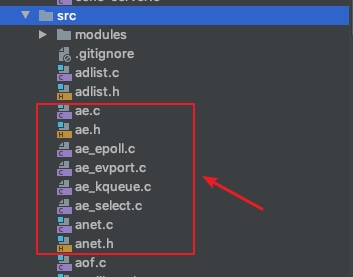
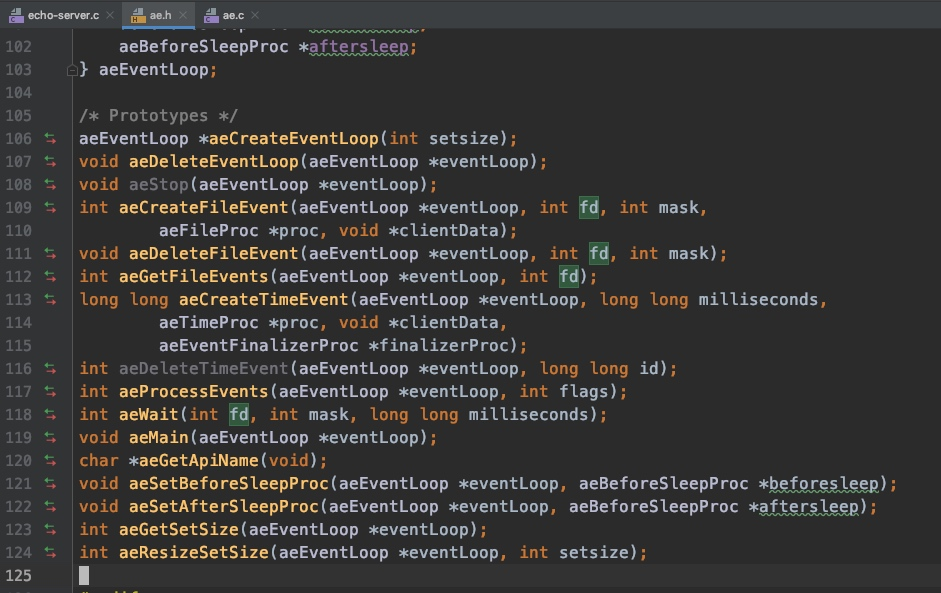
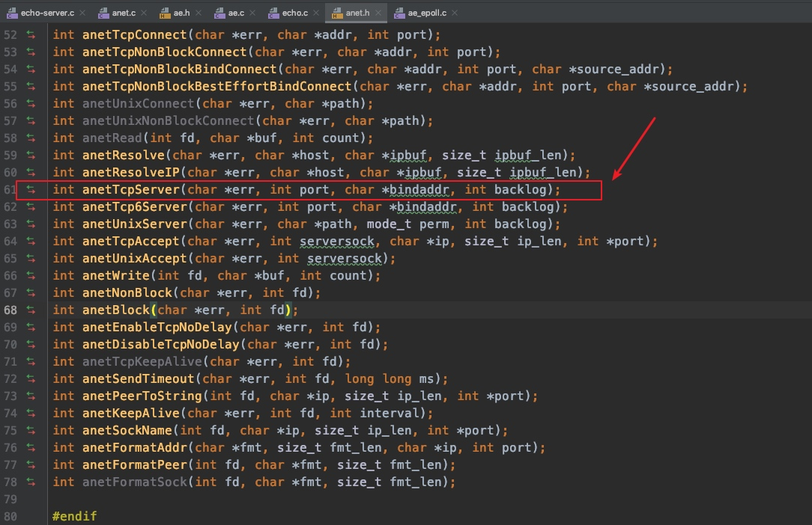
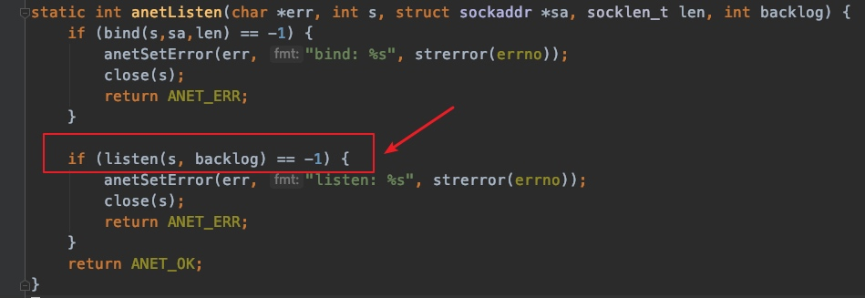
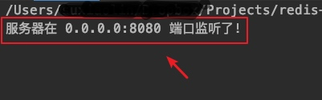
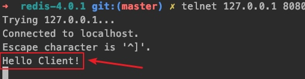

redis的通信模块封装得非常简单易用，可以直接用到自己项目中，学习下也是很有价值的。
本文基于redis源码4.0.1写成，redis源码下载：https://github.com/antirez/redis/archive/4.0.1.tar.gz
文件结构
redis的网络通信模块由8个文件构成

作用如下
| 文件 | 作用 |
|---|---|
| ae.c | 统一epoll、evport、kqueue、select网络事件处理接口, 函数实现 |
| ae.h | 统一epoll、evport、kqueue、select网络事件处理接口，函数原型，共享结构体定义 |
| ae_epoll.c | 封装epoll网络事件处理库到统一的接口 |
| ae_evport.c | 封装evport网络事件处理库到统一的接口 |
| ae_kqueue.c | 封装kqueue网络事件处理库到统一的接口 |
| ae_select.c | 封装select网络事件处理库到统一的接口 |
统一网络库底层接口
被统一的网络事件处理接口如下，参考：ae_epoll.c, ae_evport.c, ae_kqueue.c, ae_select.c
| 接口 | 作用 |
|---|---|
| aeApiState | 底层网络库需要的fd、事件等数据共享结构体 |
| aeApiCreate | 创建网络句柄，比如epoll句柄，在这个基础上才能进行网络事件的监听处理 |
| aeApiResize | 修改网络库存放事件的容器大小，就是修改aeApiState结构体的events数组的大小 |
| aeApiFree | 删除aeApiState这个共享结构体 |
| aeApiAddEvent | 将网络fd的读写操作交给网络库进行处理，比如给这个epoll进行处理 |
| aeApiDelEvent | 从网络操作库中删除对某个fd的监听，一般服务器往客户端写完数据后，主动断开客户端连接时会使用 |
| aeApiPoll | 轮询获取网络正在发生io读写事件的事件 |
| aeApiName | 获取底层网络库的名字，比如epool,kqueue等 |
统一网络库上层接口
参考 ae.h, ae.c，封装通用的结构体和函数
网络读写事件aeFileEvent结构体
/* File event structure */
typedef struct aeFileEvent {
int mask; /* one of AE_(READABLE|WRITABLE) */
aeFileProc *rfileProc;
aeFileProc *wfileProc;
void *clientData;
} aeFileEvent;
这个结构体封装了网络数据读写事件的处理函数原型，和客户端传过来的数据。
aeFileProc是处理函数的原型的宏定义，宏定义参考如下：
typedef void aeFileProc(
struct aeEventLoop *eventLoop,
int fd,
void *clientData,
int mask
);
实际使用时，网络读写事件的函数处理需要自行编写
定时事件aeTimeEvent结构体
/* Time event structure */
typedef struct aeTimeEvent {
long long id; /* time event identifier. */
long when_sec; /* seconds */
long when_ms; /* milliseconds */
aeTimeProc *timeProc;
aeEventFinalizerProc *finalizerProc;
void *clientData;
struct aeTimeEvent *next;
} aeTimeEvent;
这个定时事件是redis用来处理后台定时任务使用的，比如处理客户端连接超时，服务端断开操作
活跃的fd
/* A fired event */
typedef struct aeFiredEvent {
int fd;
int mask;
} aeFiredEvent;
就是正在等待读、正在等待写的网络fd，一般以一个数组出现
mask字段表示是等待读，还是等待写，对应的值如下
#define AE_READABLE 1
#define AE_WRITABLE 2
网络库上层接口核心结构体aeEventLoop
/* State of an event based program */
typedef struct aeEventLoop {
int maxfd; /* highest file descriptor currently registered */
int setsize; /* max number of file descriptors tracked */
long long timeEventNextId;
time_t lastTime; /* Used to detect system clock skew */
aeFileEvent *events; /* Registered events */
aeFiredEvent *fired; /* Fired events */
aeTimeEvent *timeEventHead;
int stop;
void *apidata; /* This is used for polling API specific data */
aeBeforeSleepProc *beforesleep;
aeBeforeSleepProc *aftersleep;
} aeEventLoop;
核心字段如下
* 事件列表*events, index表示fd, 表示网络fd的读写事件发生时，执行的回调函数
* *fired 正在等待读和写的fd列表，通过轮询得到，比如epoll通过epoll_wait得到的
* beforesleep 在epoll_wait前执行
* aftersleep 在epoll_wait后执行
操作aeEventLoop相关函数

主要是对aeEventLoop结构体进行操作，这里拿几个核心的函数举例
aeCreateEventLoop()
这个函数主要是创建aeEventLoop结构体，并根据setsize参数给events, fired分配内容空间
然后再调用aeApiCreate驱动底层的网络库，比如epoll的epoll_create()，然后保存到aeEventLoop的apidata属性上
aeMain()
主要是启动无限循环、轮询处理活跃的fd，如果epoll，底层则调用epoll_wait获取可读写的fd：ae.c::aeMain() -> ae.c::aeProcessEvents() -> ae_epoll.c::aeApiPool() -> ae_epoll.c::epoll_wait()
aeCeateFileEvent()
注册网络fd到底层网络库上，并注册当读写事件发生时，需要执行的业务回调函数
拿epoll举例，调用到epoll经过的步骤：ae.c::aeCreateFileEvent() -> ae_epoll.c::aeApiAddEvent() -> epoll_ctl()
anet.h & anet.c
主要是封装socket操作，屏蔽系统底层socket操作的差异性，提供更好用的api，比如创建tcp server等

这里就拿创建tcp server来看看它的流程
anetTcpServer()
anet.c::anetTcpServer() -> anet.c::_anetTcpServer() ->
核心代码就是调用系统socket库的listen函数建立起了一个tcp的server

示例
这里使用ae.h和anet.h来创建一个简单的tcp服务器，并把给客户端传回一个"Hello World"
代码如下(myserver.c)：
#include <stdio.h>
#include <zconf.h>
#include "../src/ae.h"
#include "../src/anet.h"
char myerr[ANET_ERR_LEN] = {0};
void acceptFd(struct aeEventLoop *eventLoop, int fd, void *clientdata, int mask) {
char myerr[ANET_ERR_LEN] = {0};
printf("获取客户端连接的fd.\n");
char ip[20] = {0};
int port = 0;
int clientfd = anetTcpAccept(myerr, fd, ip, sizeof(ip), &port);
if (clientfd == AE_ERR) {
printf("获取客户端连接的fd异常!! \n");
return;
}
printf("客户端ip %s port %d \n", ip, port);
int ret = anetNonBlock(myerr, clientfd);
if (ret == ANET_OK) {
printf("客户端事件非阻塞处理设置成功\n\n");
}
anetEnableTcpNoDelay(myerr, clientfd);
write(clientfd,"Hello Client!\n",14);
}
int main() {
aeEventLoop *eventLoop = aeCreateEventLoop(1024);
if(!eventLoop){
return 1;
}
int fd = anetTcpServer(myerr, 8080, "0.0.0.0", 511);
if (fd != ANET_ERR) {
anetNonBlock(NULL, fd);
if (aeCreateFileEvent(eventLoop, fd, AE_READABLE, acceptFd, NULL)) {
printf("注册tcp服务器接收客户端连接的事件处理函数异常");
}
}
printf("服务器在 0.0.0.0:8080 端口监听了! \n");
aeMain(eventLoop);
aeDeleteEventLoop(eventLoop);
return 0;
}
然后进行编译并启动，编译可以使用gcc，效果如下
gcc -o myserver src/ae.c src/anet.c src/zmalloc.c myserver.c

可以使用telnet进行测试

可以看到客户端已经成功收到服务器传回的Hello World了
一些注意的点
Mac OS 10.14.5下如果无法找到c的标准库，需要安装这个文件：/Library/Developer/CommandLineTools/Packages/macOS_SDK_headers_for_macOS_10.14.pkg